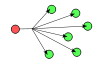

目录 [−]
单播(unicast): 是指封包在计算机网络的传输中，目的地址为单一目标的一种传输方式。它是现今网络应用最为广泛，通常所使用的网络协议或服务大多采用单播传输，例如一切基于TCP的协议。
组播(multicast): 也叫多播， 多点广播或群播。 指把信息同时传递给一组目的地址。它使用策略是最高效的，因为消息在每条网络链路上只需传递一次，而且只有在链路分叉的时候，消息才会被复制。
广播(broadcast):是指封包在计算机网络中传输时，目的地址为网络中所有设备的一种传输方式。实际上，这里所说的“所有设备”也是限定在一个范围之中，称为“广播域”。
任播(anycast):是一种网络寻址和路由的策略，使得资料可以根据路由拓朴来决定送到“最近”或“最好”的目的地。
在Linux运行ifconfig, 如果网卡信息中包含UP BROADCAST RUNNING MULTICAST，则支持广播和组播。
详细介绍
（来自维基百科）
单播：
每次只有两个实体相互通信，发送端和接收端都是唯一确定的。
在IPv4网络中，0.0.0.0到223.255.255.255属于单播地址。
你对小月月喊“小月月”，那么只有小月月回过头来答应你。组播
“组播”这个词通常用来指代IP组播。IP组播是一种通过使用一个组播地址将数据在同一时间以高效的方式发往处于TCP/IP网络上的多个接收者的协议。此外，它还常用来与RTP等音视频协议相结合。
互联网架构师戴夫·克拉克是这样描述IP组播的：“你把数据包从一头放进去，网络就会试图将它们传递到想要得到它们的人那里。”
组播报文的目的地址使用D类IP地址， D类地址不能出现在IP报文的源IP地址字段。
你在大街上大喊一声“美女”， 会有一群女性回头看你。广播

并非所有的计算机网络都支持广播，例如X.25网络和帧中继都不支持广播，而且也没有在“整个互联网范围中”的广播。IPv6亦不支持广播，广播相应的功能由任播(anycast)代替。
通常，广播都是限制在局域网中的，比如以太网或令牌环网络。因为广播在局域网中造成的影响远比在广域网中小得多。- 以太网和IPv4网都用全1的地址表示广播，分别是ff:ff:ff:ff:ff:ff和255.255.255.255。
- 令牌环网络使用IEEE 802.2控制域中的一个特殊值来表示广播。
你在公司大喊一声“放假了”， 全部同事都会响应，大叫爽死了。
任播
任播是与单播、广播和组播不同的方式。- 在单播中，在网络位址和网络节点之间存在一一对应的关系。
- 在广播和组播中，在网络位址和网络节点之间存在一对多的关系：每一个目的位址对应一群接收可以复制资讯的节点。
- 在任播中，在网络位址和网络节点之间存在一对多的关系：每一个位址对应一群接收节点，但在任何给定时间，只有其中之一可以接收到传送端来的资讯。
在互联网中，通常使用边界网关协议来实现任播。
作为老板，你在公司大喊一声“开发组的过来一个人”， 总会有一个人灰溜溜去响应， 挨批还是发钱啊？
组播地址
参考 iana
组播组可以是永久的也可以是临时的。组播组地址中，有一部分由官方分配的，称为永久组播组。永久组播组保持不变的是它的ip地址，组中的成员构成可以发生变化。永久组播组中成员的数量都可以是任意的，甚至可以为零。那些没有保留下来供永久组播组使用的ip组播地址，可以被临时组播组利用。
- 224.0.0.0～224.0.0.255为预留的组播地址（永久组地址），地址224.0.0.0保留不做分配，其它地址供路由协议使用；
- 224.0.1.0～224.0.1.255是公用组播地址，Internetwork Control Block；
- 224.0.2.0～238.255.255.255为用户可用的组播地址（临时组地址），全网范围内有效；
- 239.0.0.0～239.255.255.255为本地管理组播地址，仅在特定的本地范围内有效。
永久的组播地址：
- 224.0.0.0 基准地址（保留）
- 224.0.0.1 所有主机的地址 （包括所有路由器地址）
- 224.0.0.2 所有组播路由器的地址
- 224.0.0.3 不分配
- 224.0.0.4 dvmrp路由器
- 224.0.0.5 所有ospf路由器
- 224.0.0.6 ospf DR/BDR
- 224.0.0.7 st路由器
- 224.0.0.8 st主机
- 224.0.0.9 rip-2路由器
- 224.0.0.10 Eigrp路由器
- 224.0.0.11 活动代理
- 224.0.0.12 dhcp 服务器/中继代理
- 224.0.0.13 所有pim路由器
- 224.0.0.14 rsvp封装
- 224.0.0.15 所有cbt路由器
- 224.0.0.16 指定sbm
- 224.0.0.17 所有sbms
- 224.0.0.18 vrrp
以太网传输单播ip报文的时候，目的mac地址使用的是接收者的mac地址。但是在传输组播报文时，传输目的不再是一个具体的接收者，而是一个成员不确定的组，所以使用的是组播mac地址。组播mac地址是和组播ip地址对应的。iana（internet assigned number authority）规定，组播mac地址的高24bit为0x01005e，mac 地址的低23bit为组播ip地址的低23bit。
由于ip组播地址的后28位中只有23位被映射到mac地址，这样就会有32个ip组播地址映射到同一mac地址上。
广播地址
广播地址(Broadcast Address)是专门用于同时向网络中所有工作站进行发送的一个地址。在使用TCP/IP 协议的网络中，主机标识段host ID 为全1 的IP 地址为广播地址，广播的分组传送给host ID段所涉及的所有计算机。例如，对于10.1.1.0 （255.255.255.0 ）网段，其广播地址为10.1.1.255 （255 即为2 进制的11111111 ），当发出一个目的地址为10.1.1.255 的分组（封包）时，它将被分发给该网段上的所有计算机。
本地广播地址为255.255.255.255。
Java，单播，组播与广播
单播
UDP协议的全称是用户数据报协议，在网络中它与TCP协议一样用于处理数据包，是一种无连接的协议。在OSI模型中，在第四层——传输层，处于IP协议的上一层。UDP有不提供数据包分组、组装和不能对数据包进行排序的缺点，也就是说，当报文发送之后，是无法得知其是否安全完整到达的。UDP用来支持那些需要在计算机之间传输数据的网络应用。包括网络视频会议系统在内的众多的客户/服务器模式的网络应用都需要使用UDP协议。UDP协议从问世至今已经被使用了很多年，虽然其最初的光彩已经被一些类似协议所掩盖，但是即使是在今天UDP仍然不失为一项非常实用和可行的网络传输层协议。
与所熟知的TCP（传输控制协议）协议一样，UDP协议直接位于IP（网际协议）协议的顶层。根据OSI（开放系统互连）参考模型，UDP和TCP都属于传输层协议。
UDP首部字段由4个部分组成，其中两个是可选的。各16bit的来源端口和目的端口用来标记发送和接受的应用进程。因为UDP不需要应答，所以来源端口是可选的，如果来源端口不用，那么置为零。在目的端口后面是长度固定的以字节为单位的长度域，用来指定UDP数据报包括数据部分的长度，长度最小值为8byte。首部剩下地16bit是用来对首部和数据部分一起做校验和（Checksum）的，这部分是可选的，但在实际应用中一般都使用这一功能。
TCP和UDP的区别。
| TCP(传输控制协议) | UDP(用户数据报协议) | |
|---|---|---|
| 是否连接 | 面向连接 | 面向非连接 |
| 传输可靠性 | 可靠的 | 不可靠的 |
| 应用场合 | 传输大量的数据 | 少量数据 |
| 速度 | 慢 | 快 |
单播有UDP和TCP两种方式。 Java中 TCP socket编程就是单播的方式， ServerSocket/Socket。
Java中UDP也可以使用单播发送数据报：
|
|
|
|
组播
多播数据报套接字类用于发送和接收 IP 多播包。MulticastSocket 是一种 (UDP) DatagramSocket，它具有加入 Internet 上其他多播主机的“组”的附加功能。
播组通过 D 类 IP 地址和标准 UDP 端口号指定。D 类 IP 地址在 224.0.0.0 和 239.255.255.255 的范围内（包括两者）。地址 224.0.0.0 被保留，不应使用。
可以通过首先使用所需端口创建 MulticastSocket，然后调用 joinGroup(InetAddress groupAddr) 方法来加入多播组：
|
|
将消息发送到多播组时，该主机和端口的所有预定接收者都将接收到消息（在数据包的生存时间范围内，请参阅下文）。套接字不必成为多播组的成员即可向其发送消息.
当套接字预定多播组/端口时，它将接收由该组/端口的其他主机发送的数据报，像该组和端口的所有其他成员一样。套接字通过 leaveGroup(InetAddress addr) 方法放弃组中的成员资格。多个 MulticastSocket 可以同时预定多播组和端口，并且都会接收到组数据报。
|
|
|
|
广播
在Java中，在Java UDP中单播与广播的代码是相同的,要实现具有广播功能的程序只需要使用广播地址即可。
Netty与单播，组播
广播的例子
例子Quote of the Moment是一个广播的例子。
|
|
|
|
组播
SocketOptions定义组播和广播的一些常量。
- IP_MULTICAST_IF / networkInterface: The name of the interface on which outgoing multicast packets should be sent. When a host has multiple network interfaces, this tends to be quite important.
- IP_MULTICAST_IF2 / networkInterface: The same as IP_MULTICAST_IF but defined again for good measure.
- IP_MULTICAST_LOOP / loopbackModeDisabled: Defines if multicast packets should be received by the sender of the same.
- SO_BROADCAST / broadcast: Enables or disables a DataGramSocket's ability to send broadcast messages,
参照netty的测试套件。
单播
参看netty的测试套件